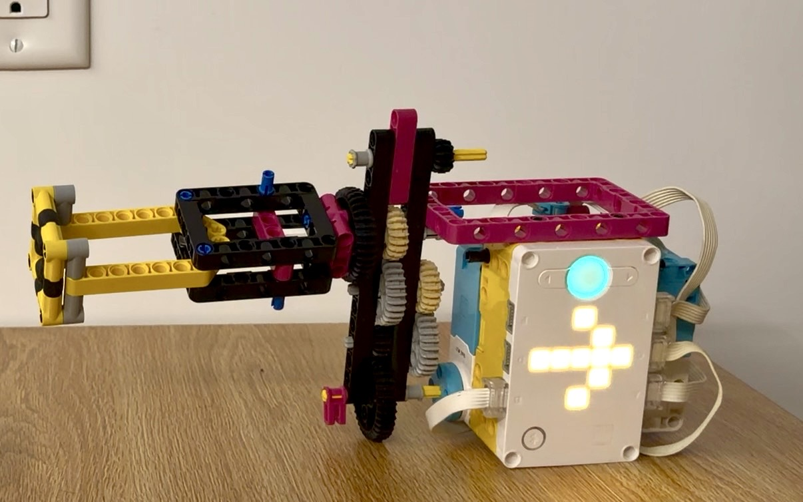

The Astronaut Tool is a Smart Mechatronic Screwdriver built with LEGO SPIKE Prime hardware and custom MicroPython firmware. It is designed for repetitive fastening and unfastening tasks. A force sensor controls the motor speed, while a release-triggered state machine alternates the tool between screwing and unscrewing.
I won the class tournament for the best astronaut tool with this project.
from hub import port, light_matrix
import runloop
import motor
import force_sensor
# System Configuration
MOTORS = (port.E, port.A, port.C)
MAX_SPEED = 800
DEADBAND = 3 # Threshold to eliminate minor surface noise/chatter
SMOOTHING_FACTOR = 0.4 # Linear interpolation coefficient for gear protection
# 5x5 Custom Arrow Matrices (0-9 brightness scale)
ARROW_CCW = [
0, 9, 0, 0, 0,
9, 9, 9, 9, 9,
0, 9, 0, 0, 0,
0, 0, 0, 0, 0,
0, 0, 0, 0, 0
]
ARROW_CW = [
0, 0, 0, 9, 0,
9, 9, 9, 9, 9,
0, 0, 0, 9, 0,
0, 0, 0, 0, 0,
0, 0, 0, 0, 0
]
async def main():
current_direction = -1 # -1 = Counter-Clockwise (Unscrew), 1 = Clockwise (Screw)
was_pressed = False
current_speed = 0.0
print("Smart Drill System Initialized.")
light_matrix.show(ARROW_CCW)
while True:
is_pressed = force_sensor.pressed(port.B)
force = force_sensor.force(port.B) if is_pressed else 0
# Toggle state machine on the falling edge (sensor release)
if was_pressed and not is_pressed:
current_direction = -current_direction
# Update visual UI preview for the next operation
if current_direction == -1:
light_matrix.show(ARROW_CCW)
else:
light_matrix.show(ARROW_CW)
# Apply deadband filter to prevent idle motor jitter
if force < DEADBAND:
target_speed = 0
else:
target_speed = int(force * MAX_SPEED / 100)
# Smooth acceleration profile to mitigate mechanical backlash
current_speed += (target_speed - current_speed) * SMOOTHING_FACTOR
actual_speed = int(current_speed)
# Execute motor commands across all coupled ports
if is_pressed and actual_speed > 0:
final_velocity = current_direction * actual_speed
for p in MOTORS:
motor.run(p, final_velocity)
else:
for p in MOTORS:
motor.stop(p)
was_pressed = is_pressed
await runloop.sleep_ms(20)
runloop.run(main())